Overview
Enterprise Keyboard Designer (EKD) Cloud is a web-based tool for creating customized key layouts to enhance an application and promote efficient and accurate data entry when specific input situations arise. Layouts created with EKD Cloud work on Zebra Android devices that use Zebra's Enterprise Keyboard (EKB) 3.2 (or later), and can be displayed programmatically using Android intents or through DataWedge 7.4.44 (or later).
Custom-made Key Layouts
 Sample layouts made with Enterprise Keyboard Designer. Click image to enlarge, ESC to exit.
Sample layouts made with Enterprise Keyboard Designer. Click image to enlarge, ESC to exit.
General Usage Notes
Each EKD Cloud project can contain from one to 20 key layouts, each of which can be any customized grouping of keys. Layouts for a project are created through a browser-based GUI and saved as a single encrypted file. The project name becomes the file name, with “.encrypted” as the file extension (i.e. myTC58Layouts.encrypted). Once finalized, layout files can be deployed across an enterprise using ZDNA.
USE EKD Cloud FOR:
- Numerical and/or symbolic input layouts
- Function-key layouts
- Layouts that combine function keys with buttons for scanning, sending an intent or other purposes
- Key and button layouts with custom colors, images and levels of transparency
- Layouts of custom size or shape (i.e. narrow, vertical, horizontal, etc.)
- Customized responses that pop up in a list when a button is pressed
- Custom key layouts for Zebra Enterprise Browser (2.5 or later)
DO NOT USE EKD Cloud for:
- Creating a general-purpose device keyboard replacement
- Devices that do not have Zebra Enterprise Keyboard 3.2 (or later) installed and set as the default
Additional Usage Notes
- To display EKD Cloud layouts on a device, Enterprise Keyboard must be installed on that device and set as the default input source.
- Do NOT deploy empty key layouts; they can cause Enterprise Keyboard to behave unpredictably.
- When custom layouts are displayed, all EKB settings, preferences and functions are suspended.
- If a custom layout is the default, an input method editor (IME) change request from the Google keyboard sets that custom layout as the default.
DataWedge Notes
The DataWedge service is included on every Zebra device and when enabled, allows any application on the device to acquire data from various input sources. The following rules apply when DataWedge is used.
- DataWedge default layout settings always take precedence over those set by EKD.
- If DataWedge is enabled at the time a custom layout file is deployed, the EKD default setting is ignored and the Enterprise Keyboard fixed layout is shown when an input field gets focus.
- If DataWedge is enabled after a custom layout had been set as the default, the DataWedge setting takes precedence (and is enabled).
- If DataWedge is disabled after a custom layout file is deployed, the custom file must be redeployed to use that custom file as the default layout.
- When using DataWedge to switch layouts, the EKB fixed layout is sometimes shown briefly or until the focus changes again.
Known Issues
- The "Switch-Scan" Press Action (intended to invoke the EKB "scan" layout) sometimes brings up a different layout.
- When opening a layout using the "Switch-abc," "Switch-123," "Switch-#*/" and "Switch-Scan" Actions, the layout tab name shown is sometimes NOT that of the layout being displayed.
- Use of switch actions (Switch-abc, Switch-123, etc.) requires the respective tab(s) (Alpha, Numeric, etc.) to be enabled in Enterprise Keyboard Preferences on the target device(s).
- The order of layout names shown in the EKD layout menu can vary from the list returned by the
GET available keyboard layoutsintent API. See Enterprise Keyboard APIs for details. - Deployed layouts sometimes look slightly different than their appearance in the device simulator.
The terms “button” and “key” are used interchangeably in this guide.
Learn More
- About Enterprise Keyboard | Zebra's customizable version of the stock Android keyboard
- Using DataWedge with EKB | Part of the complete DataWedge usage guide
- Dynamically Switching Keyboards | Article by Zebra Engineering on implementing custom layouts, with sample code
- Exploring the Enterprise Keyboard API | Article by Zebra Engineering on working with EKD-made layouts
I. Create a Design
From the Design Studio section, launch the Enterprise Keyboard Designer utility:
 Click image to enlarge; ESC to exit.
Click image to enlarge; ESC to exit.
Click the “New Design” button:
 Click image to enlarge; ESC to exit.
Click image to enlarge; ESC to exit.
Enter a name (or accept auto-generated default). Add a brief description and select the device type and click “Continue” to proceed.
Once a project is created, its device type cannot be changed. Device orientation is selected on the next screen.
 Click image to enlarge; ESC to exit.
Click image to enlarge; ESC to exit.
Select intended orientation, layout name* and grid dimensions and click “Continue” when finished.
Each Design can contain as many as 20 custom key layouts, each displayed on its own tab, if desired. 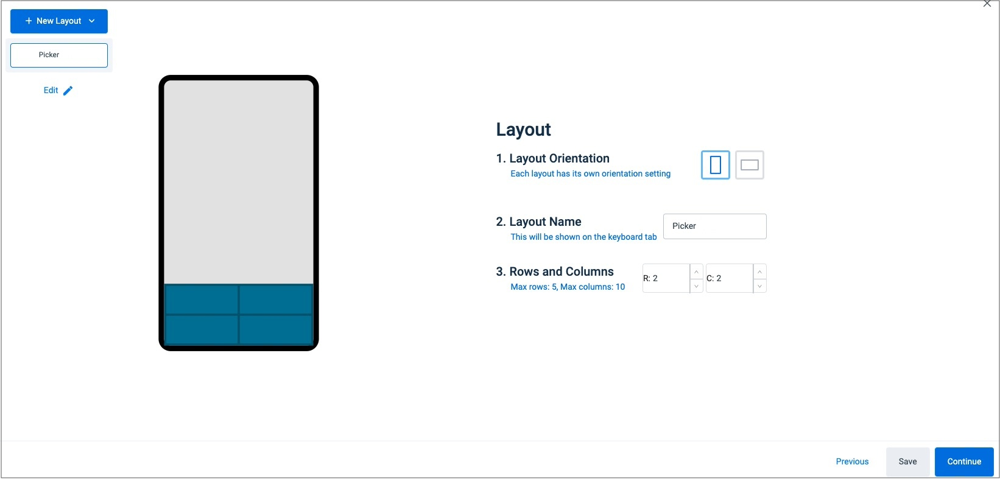 Click image to enlarge; ESC to exit.
* Keeping layout names as short as possible maxmizes tab visibilty.
II. Create Layout(s)
About Undo/Redo
The Undo and Redo functions allow the keyboard designer to reverse (and optionally redo) as many as 10 of the most recent actions, subject to the limitations listed below.
- Press CTRL-Z to undo the most recent operations(s) from newest to oldest.
- The Undo "stack" stores as many as 10 actions, and works only within the active layout.
- The Undo stack is cleared when:
- Switching layouts
- Creating a new layout
- Clearing the current layout
- Switching layout type (e.g. from Grid to Drag-and-Drop or vice-versa)
- Undo can be used to clear an entire layout (after user confirmation). This action cannot be undone.
Starting a Layout
NOTE: The on-screen device simulator updates automatically as values are selected.
On the Keyboard tab, select desired values for:
a. Background Color (of space between keys)
b. Keyboard Transparency (applies to layout keys and background)
c. Keyboard Position (controls where layout is anchored on device screen)
d. Preview (enable to briefly display a key's value when pressed)
e. If desired, click "+ All Layouts" to replicate selected attributes to all layouts in the design.
Click "Save" button when finished. Then select "Size" tab to continue. 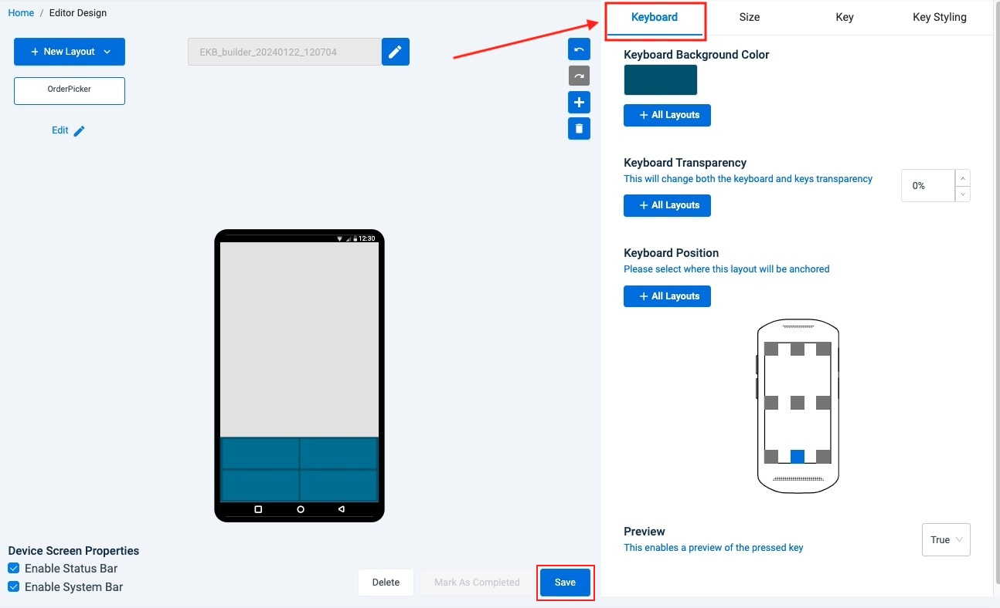 Click image to enlarge, ESC to exit.
On the Size tab, select desired values for:
a. Margins and Spacing (adjusts gaps between keys and margins on device edges)
b. Keyboard Height (select "Size Manually" to drag height in simulator)
c. Keyboard Width (select "Size Manually" to drag width in simulator)
Click "Save" button when finished. Then select "Key" tab to continue. Click image to enlarge, ESC to exit.
Click image to enlarge, ESC to exit.
On the Key tab, select a key in the simulator and set the desired values for:
a. Primary Key Content (displayed as the primary key label)
b. Secondary Key Content (displayed as the upper-right corner key label)
c. Press Action (determines the type of press required to perform the Action)
d. Action (determines the Action performed by the selected Press Action)
Click "Save" button when finished. Then select "Key Styling" tab to continue. 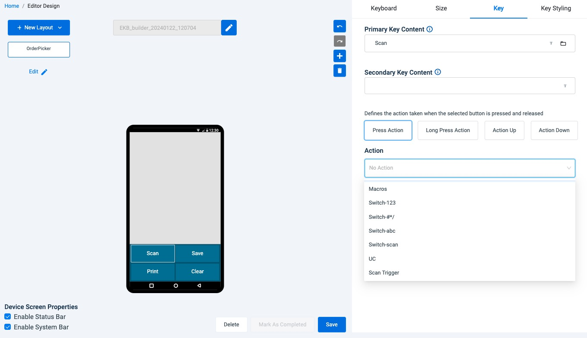 Click image to enlarge, ESC to exit.
On the Key Styling tab, select a key in the simulator and set desired values for:
a. Font (typeface for the primary and secondary key labels)
b. Key Color (color of key when NOT pressed)
c. Key Color When Pressed (key returns to Key Color when released)
d. Haptic Feedback (enables device vibration and duration on keypress)
e. If desired, click "+All Keys" to replicate selected attributes to all keys in the layout.
f. If desired, click "+ All Layouts" to replicate selected attributes to all layouts in the design.
Click "Save" button when finished. 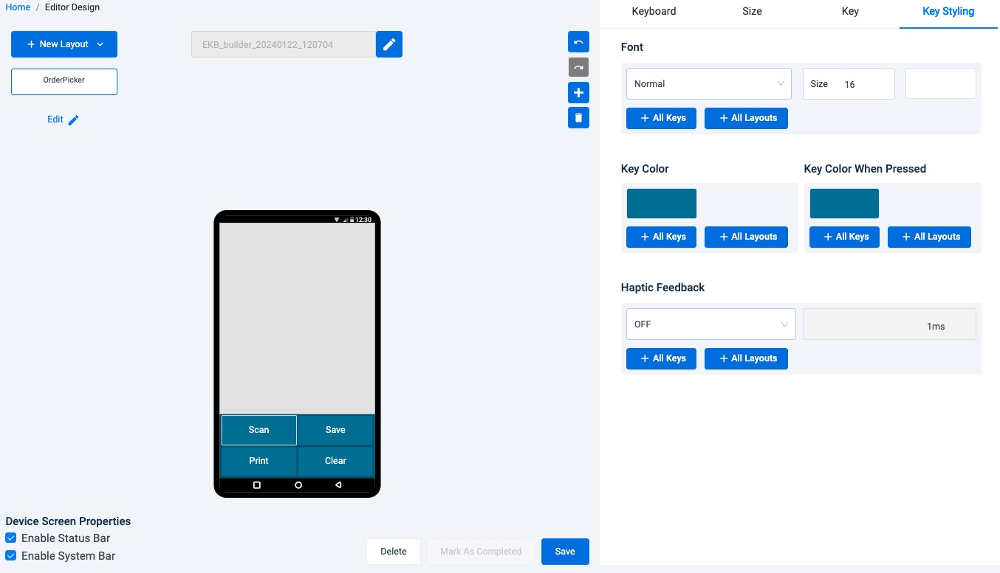 Click image to enlarge, ESC to exit.
When all desired changes are completed the layout is finished.
IMPORTANT! PLEASE READ
When a layout is completed and saved, the "Mark As Completed" button is enabled. Marking a layout as completed activates the ability to deploy the layout to devices using DNA Cloud or by other means. However, selecting this option also prevents any further changes to any of the layouts in that design.
If testing of layouts in the design is desired, Zebra recommends creating a duplicate of the final design and setting one of the copies as "Completed." Then the completed layout can be deployed and tested, the "non-completed" copy can be edited, if needed. Repeat this process as required until the layout looks and performs as desired on devices.
~ END OF DRAFT PORTION ~
More work to come.
-----
(Button) Layout Properties
- Left - Layout offset (in pixels) from the left edge of the screen. Value must fall between the layout's left and right boundaries.
- Top - Layout offset (in pixels) from the top edge of the screen. Value must fall between the layout's upper and lower boundaries.
- Width - Specifies the width (in pixels) of the selected button. Value must be less than the layout width (min = 50).
- Height - Specifies the height (in pixels) of the selected button. Value must be less than the layout height (min = 50).
IMPORTANT: The button layout properties above DO NOT support multi-key selection; behavior is unpredictable.
Text Properties
- Text - Specifies the button label (displayed text) for the selected button (max = 5); must be blank if an image is selected as button background.
- Font Size - Specifies the font size (in points) of the button label text for the selected button (min = 10; max = 25).
- TextColor - Specifies the color of the button label text for the selected button.
- TextStyle – Specifies the style of the button label text for the selected button. Drop-down values: Normal, Bold, BoldItalic, Italic.
- SecondaryText - Specifies the secondary button label displayed in the upper-right corner of the selected button. Indicates the key’s output or Action when long-pressed (max = 2); must be blank if an image is selected as button background.
Text Properties Usage Notes
- Button property minimum and maximum value rules are the same for individual and multi-key selections.
- Deleting a group of multi-selected keys using the “Delete” key on the host computer’s keyboard is not supported. Keys must be deleted individually.
- The text input field accepts all characters, including Chinese.
- All key-label text (including secondary text) is ignored if a key image is specified.
- The font size used for a button label is dependent on the size of the button being labeled. To avoid automatic button resizing, select a font size appropriate for the size of the button.
- The number and size of characters in the button text and secondary text fields should correspond to the key size to avoid automatic size changes.
- The position of secondary text can exceed button height (and be positioned out of view) if button is too small. To avoid this issue, increase button height.
Action Properties
- PressAction - Defines the action taken when the selected Button is pressed and released. Accepts only the predefined command strings in drop-down menu (see below).
Overridden by ActionDown property. Default = no action. - LongPressAction – Defines the action taken when the selected button is pressed and held. Accepts only the predefined command strings in drop-down menu (see below).
Overridden by ActionUp property. Default = no action. - ActionDown - Defines the action to be taken immediately upon button press (before it is released). Accepts only the predefined command strings in the drop-down menu (see below).
Overrides PressAction property. Default = no action. - ActionUp - Defines the action to be taken when the selected key is released (after being pressed). Accepts only the predefined command strings in the drop-down (see below).
Overrides LongPressAction property. Default = no action.
IMPORTANT: The Action properties above DO NOT support multi-key selection.
Button Actions
Button Actions supported by EKD include predefined command strings for generating keyEvent output and for switching the key layout currently displayed on the device.
Perform keyEvent Action - Used to generate a particular keyEvent or output a character. Enter the key and value in key-value format from among the standard Android keyEvent values. The keyEvent for a key can be captured inside JavaScript onKeyDown events and outputs the value, if associated. The drop-down action commands are selected using the steps below.
To assign a keyEvent value:
- In the Action section of the Button Properties panel, select the desired Action from the drop-down:
 Click image to enlarge, ESC to exit.
Click image to enlarge, ESC to exit.
- For keyCodes (i.e. key in caps, Unicode, etc), a box pops up similar to the one below.
Enter a single value corresponding to the type of Action selected:
 Click image to enlarge, ESC to exit.
Click image to enlarge, ESC to exit.
- Repeat Steps 1 and 2 until each button contains the desired Action.
- Click "Save Layout" button to store the project settings.
- Click "Save Project" to create a project file for deployment.
- Predefined command strings - Enter an Android keyEvent value in the pop-up:
- key in caps - Outputs an upper-case letter corresponding to the keyValue entered.
- key - Outputs the lower-case character corresponding to the keyValue entered.
- Canned text - Displays a list of predefined responses (see below).
- UC - Outputs the Unicode character corresponding to the Unicode value entered.
- Actions to switch the layout - Use the key-value pairs below to switch to a specific layout.
- Switch-abc - Switches to the Enterprise Keyboard standard alpha-numeric layout.
- Switch-123 - Switches to the fixed numeric layout.
- Switch-Scan - Switches to the “scanning button" layout.
- Switch-#*/ - Switches to the “#*/” (symbolic) layout.
- Switch-CustomLayout - Switches to a custom layout (enter a valid layout name in the pop-up).
- Scan Trigger - Scans a barcode using DataWedge. Supported only with Press Action. Note: DataWedge must be configured before use of this command. Disabled if DataWedge APIs are protected. More about DataWedge Secure APIs.
Also see DataWedge EKB guide.
See all Unicode characters
See all Android keyEvent values
Note: All entries are case-sensitive.
Macros
Multiple events can be assigned to a single key-press using Macros. Any key can be configured to send any number of keyCodes, events or Actions as listed below.
Supported Key-press Actions:
- PressAction
- LongPressAction
- ActionDown
- ActionUp
Supported Events:
- Send keyEvent
- Send uppercase or lowercase keyCode or Unicode character
- Switch to a fixed or custom layout
- Set a delay between Actions (required*)
*A delay of at least 500ms is required between key events to ensure desired execution order.
To Assign a Macro:
- Select a key to which to assign a Macro.
- In the Action section of the Button Properties panel, select "Macros" from the desired Press Action drop-down (Press, LongPress, ActionDown or ActionUp):
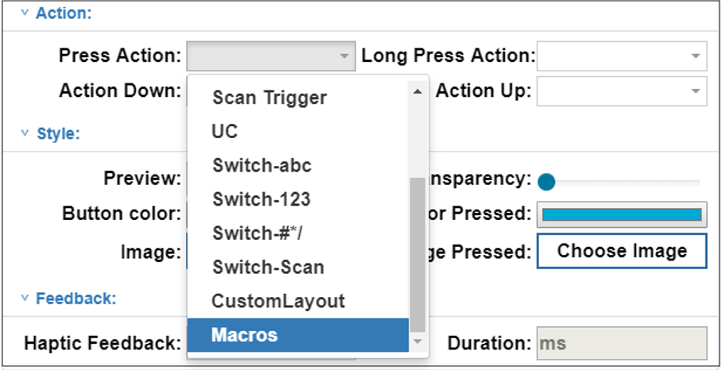 Click image to enlarge, ESC to exit. - In the input box that appears click the drop-down.
A partial list of available key events is shown in Step 4. 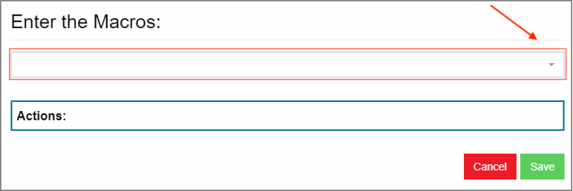 Click image to enlarge, ESC to exit. - From the drop-down, select an event (and enter a value if applicable).
Then click the "Add" button: 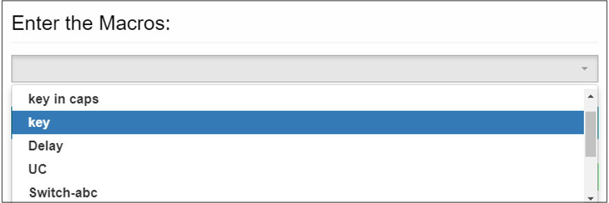 Click image to enlarge, ESC to exit. - Select "Delay" and enter a value of at least 500 (ms) between each key event.
- Repeat Steps 4 and 5 until all desired events are added to the Macro as desired.
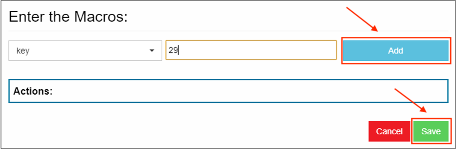 Click image to enlarge, ESC to exit. - When finished, click the "Save" button: 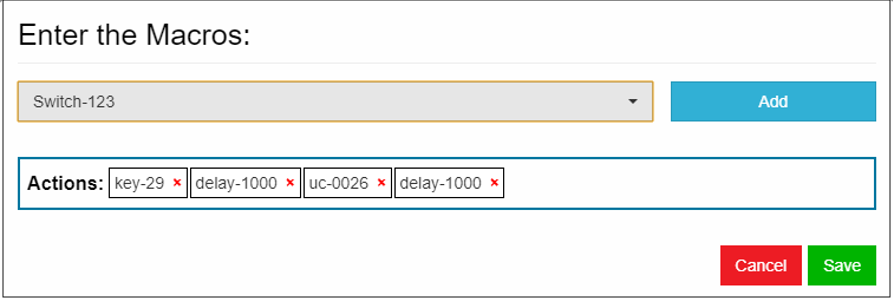 Click image to enlarge, ESC to exit.
The Macro is now assigned to the selected key
To Edit or Delete a Macro
- Click on the key containing the Macro to edit or delete.
The list of the Macro's key events appears. - Click the "X" for each key event to be removed from the sequence:
 Click image to enlarge, ESC to exit.
Click image to enlarge, ESC to exit.
- Add events as desired as in Steps 4 and 5 above.
If deleting the Macro, remove all events. - Click the "Save" button to finish.
WARNING: If all events are deleted from a Macro, the key will perform no function.
Canned text
A list of Canned text or predefined responses can be assigned to any key and appear in a pop-up list when that key is pressed. This can help improve the speed and accuracy of responses when using Enterprise Keyboard. Tapping on a predefined response enters the text into the focused field as if it had been typed in manually.
IMPORTANT: Use of the plus sign (+) in Canned text list items might cause unpredictable behavior.
Example Responses:
- "I'm in a meeting...please call back later"
- "Unable to talk now...please send a text"
- "Application busy...try again later"
- "Please refer to patient record"
- "Item out of stock"
Note: This feature requires Enterprise Keyboard 3.4 or later on the device.
To create Canned text response(s):
- Create (or select) a button in the current layout.
- In the Action section of the Button Properties panel, select "Canned text" from the drop-down:
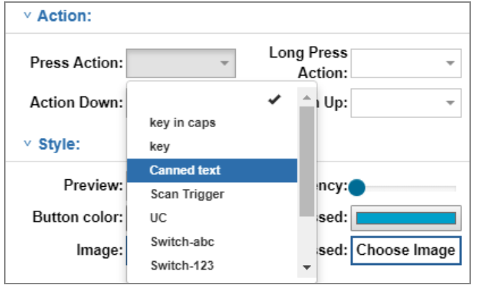
Click image to enlarge, ESC to exit.
- Enter a desired response in the pop-up:
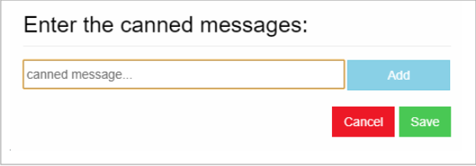
IMPORTANT: Use of the plus sign (+) in Canned text list items might cause unpredictable behavior.
- Click "Add" to store the response and add another.
- Repeat Steps 3 and 4 until all responses are stored.
- Click "Save" to store all responses and exit pop-up.
Canned text responses are stored and deployed with the layout.
NOTE: Setting the default layout from EKD requires Enterprise Keyboard 3.4 or later on the device.
To edit or delete Canned text Response(s):
- Open the key layout project that contains the response list(s) to be modified.
- In the layout, select the button that contains the response list(s) to be edited.
- In the Action section of the Button Properties panel, select "Canned text" from the drop-down:
Click image to enlarge, ESC to exit.
A pop-up appears with the list of responses currently stored with that button: 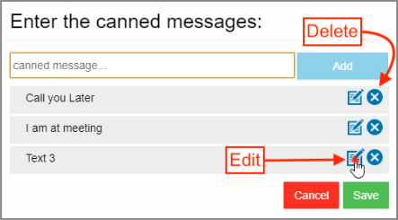 Click image to enlarge, ESC to exit. - To Delete response(s), click the "X" for the response(s). Then skip to Step 8.
WARNING: Responses are deleted immediately. This action cannot be undone. - To Edit, click the edit button for the response to be edited:
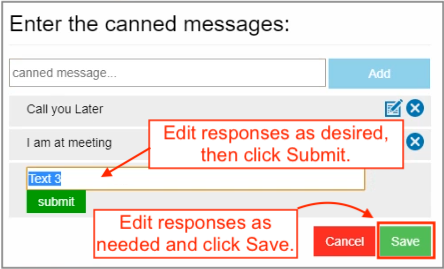 Click image to enlarge, ESC to exit. - Edit the response as desired and click Submit.
IMPORTANT: Use of the plus sign (+) in Canned text responses might cause unpredictable behavior. - Repeat Steps 5 and 6 until all Canned text responses appear as desired.
- Click Save to store changes and exit the pop-up.
Canned text responses are stored and deployed with the layout.
NOTE: Setting the default layout from EKD requires Enterprise Keyboard 3.4 or later on the device.
Repeat Keys
EKD 1.9 (and later) adds three Action Properties for repeatedly sending keyCodes when a key is long-pressed. Enterprise Keyboard 3.9 or later is required.
 Click image to enlarge, ESC to exit.
Click image to enlarge, ESC to exit.
- Repeat keyinCaps continuously sends an uppercase letter corresponding to the key being long-pressed as long as the key is held down, regardless of whether the shift key was used.
- Repeat key continuously sends a lowercase letter corresponding to the key being long-pressed as long as the key is held down.
- Repeat UC continuously sends the specified Unicode character when the key is long-pressed as long as the key is held down.
Note: These actions apply only to Long-Press Action properties.
Style Properties
Changes to these settings appear immediately in the device simulator unless otherwise noted.
- Preview - When True, displays the value of a key when pressed (default = True).
- Transparency - Used to select the transparency for the selected key from 0 (opaque) to 100 (fully transparent) (default = opaque).
- Button Color - Used to select the color of the selected key using the standard Windows color picker (default = blue).
- ColorPressed - Used to select the color of the selected key when the key is pressed using the standard Windows color picker.
- Image - Used to select an image to fill the space of the selected key. When the layout is saved, selected image(s) are embedded within the “.encrypted” file. Supports
.jpgand.pngimage files. Zebra recommends using files of 100 KB or less for optimal layout performance. File name must begin with an alpha-numeric character. - ImagePressed - Used to select an image to be displayed when the button is pressed. After selection, the image appears on the device simulator when the button is pressed. When the layout is saved, selected image(s) are embedded within the “.encrypted” file. Supports
.jpgand.pngimage files. Zebra recommends using files of 100 KB or less for optimal layout performance. File name must begin with an alpha-numeric character.
Style Properties Usage Notes
- Button property minimum and maximum value rules are the same for individual and multi-key selections.
- Deleting a group of multi-selected keys using the “Delete” key on the host computer’s keyboard is not supported. Keys must be deleted individually.
Feedback Properties
Applies only to devices that support vibration.
- HapticFeedback - Used to control whether the device vibrates when the selected button is clicked. Set the value to “true” to vibrate (default = false).
- Duration - Used to enter the duration (in ms) of vibration when the “Haptic Feedback” property is set to true (min = 40 (default); max = 1000).
NOTE: Button property minimum and maximum value rules are the same for individual and multi-key selections.
Multi-key Selection
Use the CTRL key on the host computer's keyboard to select multiple keys simultaneously. Selected key(s) are indicated by a red border, and supported input fields for Button Properties are enabled. Changes to properties appear immediately on the selected button(s). Properties are described in their relevant sections above.

 Click image to enlarge, ESC to exit.
Click image to enlarge, ESC to exit.
These properties can be assigned to multiple buttons simultaneously:
- Text
- Secondary Text
- Font Size
- Text Color
- Text Style
- Preview value
- Transparency
- Button Color
- Color pressed
- Haptic Feedback
- Duration
These properties CANNOT be assigned to multi-selected keys:
- Button action properties:
- Press Action
- Long Press Action
- Action Up
- Action Down
- Image
- Image pressed
- Layout properties:
- Left
- Top
- Width
- Height
Multi-key Usage Notes
- Button property minimum and maximum value rules are the same for individual and multi-key selections.
- Deleting a group of multi-selected keys using the “Delete” key on the host computer’s keyboard is not supported. Keys must be deleted individually.
- Button layout (i.e. width, height, etc.) and action properties (Press, LongPress, etc.) MUST NOT be changed using multi-key selection; behavior is unpredictable.
IV. Set Layout Properties
Style Properties
- Background Color - Specifies the color of the key layout. Changes appear in the layout immediately after clicking OK in the color picker.
- Transparency - Used to select of the transparency from 0 (opaque) to 100 (fully transparent) of the key layout Background using a slider. Changes appear immediately.
Simulator Properties
- Status Bar - Used to show/hide the Status bar (which contains notifications and system icons) at the top of the device simulator screen. The layout “Top” coordinate changes based on this setting, which depends on status bar setting configured at the application level. Must be hidden for full-screen applications.
- System Bar - Used to show/hide the System (navigation) bar at the bottom of the device simulator screen. The layout “Top” coordinate changes based on this setting, which depends on System bar setting configured at the application level. Must be hidden for full-screen applications.
Save Layout
To save the current layout data, click the “Save Layout” button in the lower-right corner of the main designer screen or the “Save Grid Layout” button in the Layout Properties panel.
Save Project
To save the current key layout project:
- Click the “Save Project” button.
A dialog appears indicating the location of the saved “.encrypted” file: EKD's "Save Project" button invokes a dialog showing the default save-to folder.
EKD's "Save Project" button invokes a dialog showing the default save-to folder. - Take note of the save directory for reference during deployment.
Delete a Key
- In the layout that contains the key to be deleted, double-click on the the key to be deleted; the selected key is surrounded by a dotted red line.
- Press the “Delete” key on the host computer’s keyboard. A confirmation dialog appears.
- Click “Yes” on the confirmation dialog to delete.
NOTE: Keys must be deleted individually; multi-select is not supported for key deletion.
Clear a Layout
- In the layout to be cleared, Click the red “Clear Layout” button.
- Click “Yes” to confirm the deletion of all layout elements in the current layout.
WARNING: This action cannot be undone.
Set Default Layout
If a definition file contains more than one layout, any one of the layouts can be set as the default, to be automatically invoked whenever the Enterprise Keyboard is displayed on the device.
Also see important DataWedge Notes later in this document.
To set the default layout:
- From the main designer screen, click the Main Menu button in the upper-left corner.
A list of available layouts is displayed: 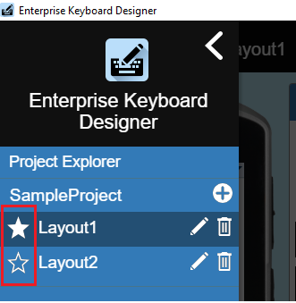 The current default layout is indicated by a solid star icon. - Click the star icon corresponding to the layout to be set as the default.
- Click the "Save Layout" button to store settings.
- Click "Save Project" to create a project file for deployment.
The selected layout will be the default on any device to which the file is deployed.
To remove a layout as the default:
- From the main designer screen, click the menu button in the upper-left corner.
A list of available layouts is displayed. - Click the star icon to deselect it.
- Click the "Save Layout" button to store settings.
- Click "Save Project" to create a project file for deployment.
The new layout preference will be activated on any device to which the file is deployed.
V. Deploy Layout(s)
The data for custom key layout(s) is stored in the custom key-layout definition file, an encrypted file generated by EKD Cloud. This file contains information about key locations, key-value assignments, etc. for each key layout created. This single file can contain as many as 20 layout groups, each of which defines one key layout. NOTE: An app can access only a single layout file on the device; all layouts required for a device MUST be stored in that single file.
Deployment methods:
- Manual push from host PC to USB-connected device using the "Deploy" button or adb commands
- Mass deployment using StageNow and (optionally) an Enterprise Mobile Management (EMM) system
Single Device Deployment
Deploy button requirements:
- Development host:
- No more than one target device connected
- Android Debug Bridge (adb) installed and operable (see Platform Notes, below)
- Target device:
- Enterprise Keyboard 3.9 (or later) installed and enabled as default input source
- Connected to host via USB
- Press the "Deploy" button (see below) to push the current layout to the USB-connected device.
Layout file is saved to/enterprise/device/settings/ekb/configon the device. 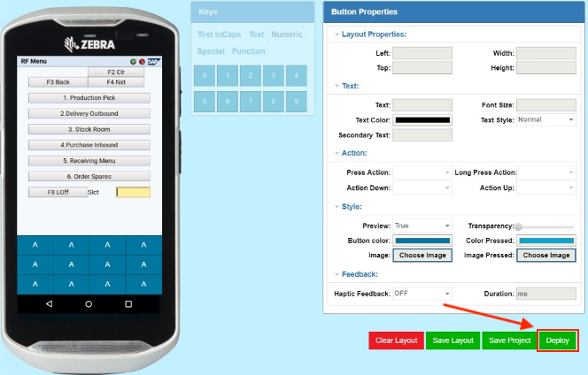 Click image to enlarge, ESC to exit. - If an older config file already exists, a message like the image below is displayed.
Press "Yes" to proceed, "No" to cancel. Click image to enlarge, ESC to exit.
Click image to enlarge, ESC to exit.
Custom key layouts are available on the device immediately upon deployment.
Platform Notes:
- On Zebra ET40, ET45, TC15, TC53 (and other 6375- and 6490-platform devices), Android restrictions prohibit the adb “push” command for file deployment to devices, even when the device is in developer mode. The EKD deployment feature for custom layouts is therefore not functional for such devices.
- To deploy custom layout files to 6375-platform devices, use a desktop file explorer and copy files to:
/sdcard/Android/data/com.zebra.mdna.enterprisekeyboard/files/config/ - Administrators can continue to mass-deploy custom layout files to:
/enterprise/device/settings/ekb/config
Mass Deployment
The process below assumes that Enterprise Keyboard is already installed on target device(s).
Note: If EKB is not already installed on the target device(s), add steps for deploying and installing EKB first, then begin at Step 1, below.
To mass-deploy a layout file:
- Locate the key layout definition file (i.e.
LayoutProjectName.encrypted) on the development host computer.
By default, the files are saved on the host PC in the download directory of the current user:
c:\Users\userName\Downloads\LayoutProjectName.encrypted
NOTE: When clicking EKD's "Save Project" button, the default save-to folder is shown as in the image below:
Click image to enlarge, ESC to exit.
- In the "Language and input" Settings panel on the device, set Enterprise Keyboard as a default input source.
- Push definition file to the device folder:
/enterprise/device/settings/ekb/config/
~OR~
/sdcard/Android/data/com.zebra.mdna.enterprisekeyboard/files/config†
Custom key layouts are available on the device immediately upon file deployment.
† Deployment to this secure destination requires use of the "Deploy file for an application" File Action of MX File Manager (or the equivalent EMM functionality). In the TargetApplicationAndFileName parameter, enter the value: com.zebra.mdna.enterprisekeyboard/config/<yourLayoutFileName>.encrypted in the deployment Profile.
Note: If custom layouts are to be accessed by Enterprise Browser and/or DataWedge, layout files copied to
/enterprise/device/settings/ekb/config/must grant full ("777") read, write, and execute permissions for all users.
Also See
- Enterprise Keyboard deployment guide | Mass deployment of EKB and key layout files
- Enterprise Keyboard APIs | Switching key layouts programmatically
- DataWedge Configuration | Using key layouts with DataWedge
VI. Switch Layouts
This section explains the program logic involved when switching layouts with Android intents when focus of an input field changes.
For programming guidance, see Enterprise Keyboard APIs.
For changing layouts through DataWedge, see the DataWedge EKB configuration guide.
Requirements
- EKB v3.2 installed and activated on the target device(s) and set as the default input source
- A single EKD layout file (i.e.
myProject.encrypted) in the following device folder:
/enterprise/device/settings/ekb/config/ - Layout file must contain ALL layouts being used by apps on the device
Use Case 1
This case describes an Android app with two text input fields. Substitute sample names shown below with those in the deployed layout definition file (i.e. myLayout.encrypted). More info.
editText1input field uses the standard Enterprise Keyboard fixed layout, which includes numeric, alpha-numeric, scan and symbol keyboards manually switchable by the user as needed.editText2input field uses a custom layout made with EKD that contains keys specifically designed for a particular type of input.
Program logic for switching between standard and custom layouts according to changes from onFocus listener:
When the editText1 field gets focus, send the following intents to display the EKB fixed layout:
- Send
ENABLEintent to Enterprise Keyboard fixed layout. - Send
RESETto the custom EKB layout. - When the
onReceive()method receives a result type value ofDEFAULT_LAYOUT, send aSHOWintent to the EKB fixed layout to display it.
When the focus changes to edittext2, send the following intents to show the custom layout:
- Send a
SETintent to set the custom layout.
Note: If the custom layout name is not known, send aGETintent before the calling the onFocus change listener to receive a list of all available layout names in the layout file. Then send theSETintent with the name of the desired layout. - On
focusOutofeditText1, sendENABLE"false" intent the EKB fixed layout to disable it.
IMPORTANT: Enterprise Keyboard must be enabled if the application goes to the background to avoid a device user resetting the layout from outside the app.
Use Case 2
This case describes an Android app with two text input fields, both requiring custom layouts alternated within a specific time interval:
editText1input field uses a custom layout callednumericLayout.encryptededitText2input field uses a custom layout calledfunctionLayout.encrypted
Program logic for switching between two custom layouts according to changes from onFocus listener:
When the editText1 field gets focus, send the following intents to display numericLayout:
- Send a
SETintent fornumericLayout.encryptedto set the custom numeric layout.
Note: If the custom layout name is not known, send aGETintent before the calling the onFocus change listener to receive a list of all available layout names in the layout file. Then send theSETintent with the name of the desired layout.
When the focus changes to edittext2, send the following intents to show the custom layout:
- Send a
SETintent forfunctionLayout.encryptedto set the custom function-key layout.
Note: If the custom layout name is not known, send aGETintent before the calling the onFocus change listener to receive a list of all available layout names in the layout file. Then send theSETintent with the name of the desired layout.
IMPORTANT: Enterprise Keyboard must be enabled if the application goes to the background to avoid a device user resetting the layout from outside the app.
Layout Switching Usage Notes
- Switching layouts is supported on Zebra Enterprise Keyboard only.
- Do NOT use the terms shown below as custom names; they are reserved for default Enterprise Keyboard layouts:
- abc
- 123
- scan
- #*/
- Scantrigger
- switch-abc
- switch-123
- switch-#*/
- switch-scan
- customLayout
- key-[any Content]
Import an EKD Project
Layout projects can be saved and modified later for use on different devices, adapted for different applications or screen sizes and appended with additional keys and/or key layouts.
To import a project:
- On EKD Cloud’s launch screen, click the “IMPORT KEYBOARD PROJECT” button.
- Navigate to and double-click the project (“
.encrypted” file) to import. - Select the target device using the drop-down menu and click the “Confirm” button.
- Click the EKD menu button to view a list of layouts available for editing.
- Select the layout to be edited and click the edit icon. The layout is displayed in the device simulator and its name is displayed the top-left corner.
- Edit the layout as desired.
- To add a new layout to the project, click the [+] icon on the EKD menu and follow steps in the Create Layout(s) section.
- Repeat Step 7 until the layout is configured as desired.
- Click "Save Layout" button to store the new project settings.
- Click "Save Project" to create a project file for deployment.
Also See
- Dynamically Switching Keyboards | Article by Zebra Engineering on implementing custom layouts, with sample code
- Exploring the Enterprise Keyboard API | Article by Zebra Engineering on working with EKD-made layouts